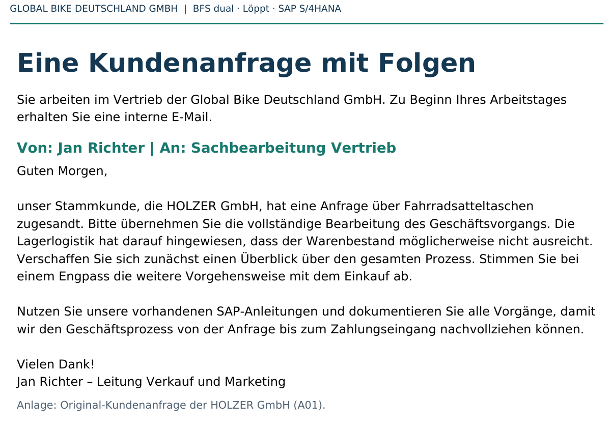

Kundenanliegen und Engpass klären
Lies die interne E-Mail und die Kundenanfrage in M1. Halte fest, wer welche Ware benötigt, welche Auskunft noch fehlt und an wen der Vertrieb sich bei knappem Bestand wendet.
Notizen


Eine Terminzusage an den Kunden hängt auch vom Einkauf ab. Bei Global Bike verfolgst du zwei Aufträge, für die Ware beschafft werden soll. Ob die Auslieferung bereits möglich ist, entscheidest du anhand der verfügbaren Menge und des bestätigten Termins im SAP-Schulungssystem.
Gib eine Prozessübersicht und deine gewählte Dokumentation für beide Geschäftsfälle ab. Je Fall gehören ein Laufzettel Vertrieb, ein Laufzettel Beschaffung, die Bestandsprüfung, eigene SAP-Belegnachweise, der Vertriebsbelegfluss und die Bestellentwicklung dazu. Markiere die Schnittstelle über den verfügbaren Bestand. Sichere auch, wie Forderung und Verbindlichkeit ausgeglichen wurden.
Du entscheidest, welche Aufgaben du selbstständig oder mit anderen bearbeitest. Für die Rückmeldung erhält jede Person ein fremdes Produkt.
15 MinutenDie Gewichtung zeigt, wie häufig und wofür die Kompetenz in den Aufgaben gebraucht wird. 1 bedeutet „kurz in einer Aufgabe“, 6 „von der Vorbereitung bis zur Auswertung“.
| Kompetenz | Gewicht (1–6) | Was übe ich? |
|---|---|---|
| F · Fachkompetenz | 6 / 6 | Ich bearbeite zwei Kundenaufträge samt Beschaffung in SAP bis zum Ausgleich von Forderung und Verbindlichkeit. |
| P · Personalkompetenz | 5 / 6 | Ich prüfe Abweichungen bei Werk, Preis, Liefertermin und Zahlungsbedingungen vor der nächsten Buchung. |
| S · Sozialkompetenz | 5 / 6 | Ich erläutere Vertrieb und Einkauf den Fehlbedarf und gebe Kolleginnen oder Kollegen belegbezogene Rückmeldung. |
| M · Methodenkompetenz | 5 / 6 | Ich leite aus einer Bestands- und Bedarfsliste den Fehlbedarf ab und dokumentiere die Abhängigkeiten zwischen den Arbeitsschritten. |
| D · Medienkompetenz | 6 / 6 | Ich sichere Vertriebsbelegfluss und Bestellentwicklung mit meinen tatsächlichen SAP-Belegnummern. |

Jan Richter leitet Verkauf und Marketing der Global Bike Deutschland GmbH. Er übergibt dir die Anfrage des Stammkunden HOLZER GmbH über 200 Fahrradsatteltaschen. Die Lagerlogistik meldet, dass der Bestand knapp sein könnte. Als Sachbearbeitung Vertrieb stimmst du den Liefertermin mit dem Einkauf ab. Vor dem ersten SAP-Beleg erstellst du eine Prozessübersicht und klärst die für deinen Übungsmandanten gültigen Werk- und Termindaten.
Im zweiten Geschäftsfall bestellt die Fahrrad Glocke GmbH direkt 300 LED-Fahrradlichtsets. Du bearbeitest beide Aufträge vom jeweiligen Einstieg bis zum Zahlungseingang. Weise an eigenen SAP-Belegen nach, wie Einkauf, Lager, Vertrieb und Rechnungswesen zusammenarbeiten.
Lies die interne E-Mail und die Kundenanfrage in M1. Halte fest, wer welche Ware benötigt, welche Auskunft noch fehlt und an wen der Vertrieb sich bei knappem Bestand wendet.
Notizen
Öffne die bearbeitbare Prozessvorlage in M2. Ordne die Begriffe bei Kunde, Global Bike und Lieferant ein. Kennzeichne Absender, Empfänger und die Schnittstelle zwischen Einkauf und Vertrieb. „Drahtesel“ in der Vorlage steht stellvertretend für den jeweiligen Kunden.
Notizen
Beschaffe die für den Schulungsmandanten geltenden Angaben mit M2. Trage für jeden Fall Werk, Lagerort, Versandstelle und Lieferdatum ein und lasse diese Angaben vor der SAP-Bearbeitung bestätigen.
Notizen
Lege für HOLZER und Fahrrad Glocke je einen Laufzettel Vertrieb und Beschaffung an. Plane mit M2, wann du Verfügbarkeit, Warenbewegungen, offene Posten und Systemnummern erfasst.
Notizen
Gib eine Prozessübersicht und deine gewählte Dokumentation für beide Geschäftsfälle ab. Je Fall gehören ein Laufzettel Vertrieb, ein Laufzettel Beschaffung, die Bestandsprüfung, eigene SAP-Belegnachweise, der Vertriebsbelegfluss und die Bestellentwicklung dazu. Markiere die Schnittstelle über den verfügbaren Bestand. Sichere auch, wie Forderung und Verbindlichkeit ausgeglichen wurden.
Prüfe die drei gleichwertigen Wahlwege in M2. Entscheide, in welcher Form du die zwei Fälle einem Kollegen übergeben möchtest. Notiere einen Grund für deine Wahl und welche Nachweise du während der Buchung sichern wirst.
Notizen
Gib eine Prozessübersicht und deine gewählte Dokumentation für beide Geschäftsfälle ab. Je Fall gehören ein Laufzettel Vertrieb, ein Laufzettel Beschaffung, die Bestandsprüfung, eigene SAP-Belegnachweise, der Vertriebsbelegfluss und die Bestellentwicklung dazu. Markiere die Schnittstelle über den verfügbaren Bestand. Sichere auch, wie Forderung und Verbindlichkeit ausgeglichen wurden.
Bearbeite A01 bis A04 in M3. Buche Anfrage, Angebot und Terminauftrag mit Bezug. Prüfe in MD04 Verfügbarkeit und Liefertermin. Teile dem Einkauf den aus der Übersicht abgeleiteten Fehlbedarf mit.
Rechenweg · 5-mm-Karo
Führe die Arbeitsaufträge A05 bis A14 in M3 aus. Gleiche Lieferantenbelege mit Bestellung und Fallfreigabe ab. Prüfe die Lieferfähigkeit nach dem Wareneingang, liefere den Kundenauftrag aus und gleiche die offenen Posten aus.
Rechenweg · 5-mm-Karo
Beginne in M4 bei der Kundenbestellung. Bearbeite beide Prozessketten und sichere deine Belege. Rechne den Skontoabzug eigenständig nach und gleiche ihn mit Ergänzungsbeleg und SAP-Zahlung ab.
Rechenweg · 5-mm-Karo
Gliedere die Mappe nach HOLZER und Fahrrad Glocke. Verweise an jeder Übergabe zwischen Einkauf, Lager, Vertrieb und Rechnungswesen auf den passenden Beleg. Erkläre die zusätzliche Bevorratung und die Zahlungsbedingungen.
Notizen
Zeige beide Verläufe in beschrifteten Grafiken mit deinen tatsächlichen Systemnummern. Markiere die Warenbewegung, die den Kundenauftrag lieferbar macht, und kennzeichne, wer an wen mit oder ohne Skonto zahlt.
Notizen
Führe in kommentierten Folien für beide Kunden durch die Belegketten. Zeige den Verfügbarkeitsnachweis vor und nach dem Wareneingang sowie die Zahlungsprüfung. Stelle die Folien so zusammen, dass sie ohne Vortrag verständlich sind.
Notizen
Vergleiche die eigenen Belegnummern, die Bestellentwicklung und die Vertriebsbelegflüsse. Halte für beide Fälle fest, ab wann der Lagerbestand die Auslieferung erlaubte. Stelle das gemeinsame Nachweispaket mit M5 zusammen.
Notizen
Reiche deine Arbeit in der Moodle-Aktivität „Peer-Feedback“ ein. Verwende neutrale Titel und Dateinamen. Entferne Namen aus Text und Dateieigenschaften. Bei einem gemeinsamen Produkt reicht jede Person eine Kopie im eigenen Konto ein. Ohne eingerichtete Aktivität verteilt die Lehrkraft codierte Arbeiten.
Notizen
Prüfe die dir zugeteilte Arbeit mit den Kriterien unten. Benenne eine konkrete Fundstelle, eine fachlich gelungene Stelle und einen begründeten Verbesserungsvorschlag. Gib die Rückmeldung in Moodle oder mit dem ausfüllbaren Peer-Bogen ab. Dein Name ist für die empfangende Person sichtbar.
Notizen
Lies das Feedback zu deinem Produkt. Verbessere die genannte Stelle oder begründe am Material, weshalb du deine Fassung beibehältst. Ergebnis ist die für die weitere Verwendung geprüfte Fassung.
Notizen
Fülle die separate Aktivität „Feedback“ in deinem Moodle-Kurs aus und sende deine Rückmeldung dort ab. Falls hier kein Direktlink angezeigt wird, öffne „Feedback“ in der Kursübersicht.
Notizen
Interne E-Mail der Vertriebsleitung und Kundenanfrage über 200 Fahrradsatteltaschen.
Verschiebbare Prozessbausteine, Fallfreigabe, beide Laufzettel und Notierhilfe für MD04.
14 Arbeitsaufträge, Originalbelege und Anleitungen für den angeleiteten Geschäftsvorgang.
Kundenbestellung, Beschaffungsauftrag, Übungsbelege und Ergänzung zur Zahlung.
Gemeinsame Prüfkriterien zu Laufzetteln, Warenbewegungen und Zahlungen.
Beide vollständigen Schülerfälle mit Aufträgen, Belegen und SAP-Anleitungen.
88 Seiten. Übersicht, Belege, SAP-Anleitungen und Kontrolle.
PowerPoint mit den vorgegebenen Begriffen und Belegen zum Verschieben.
Sie arbeiten im Vertrieb der Global Bike Deutschland GmbH. Heute erhalten Sie folgende interne E-Mail.
Von: Jan Richter – Leitung Verkauf und Marketing
An: Sachbearbeitung Vertrieb
Betreff: Kundenanfrage der HOLZER GmbH
Guten Morgen,
unser Stammkunde, die HOLZER GmbH, hat eine Anfrage über Fahrradsatteltaschen zugesandt. Bitte übernehmen Sie die vollständige Bearbeitung des Geschäftsvorgangs. Die Lagerlogistik hat darauf hingewiesen, dass der Warenbestand möglicherweise nicht ausreicht. Verschaffen Sie sich zunächst einen Überblick über den gesamten Prozess. Stimmen Sie bei einem Engpass die weitere Vorgehensweise mit dem Einkauf ab.
Nutzen Sie unsere vorhandenen SAP-Anleitungen und dokumentieren Sie alle Vorgänge, damit wir den Geschäftsprozess von der Anfrage bis zum Zahlungseingang nachvollziehen können.
Vielen Dank! Jan Richter – Leitung Verkauf und Marketing
Lesen Sie die Handlungssituation und die Original-Kundenanfrage. Welche Informationen liegen vor? Welche Abteilungen sind beteiligt? Welches Problem könnte auftreten?
Öffnen Sie die vorhandene PowerPoint-Datei. Drahtesel steht dort stellvertretend für den Kunden; im ersten Fall HOLZER, im zweiten Fahrrad Glocke.
Arbeitsauftrag PDF · PowerPoint-Arbeitsvorlage (editierbar)
Planen Sie die Arbeitsschritte und Abhängigkeiten anhand Ihrer Prozessübersicht. Prüfen Sie, welche Anleitungen, Belege und Laufzettel Sie benötigen. Führen Sie für jeden Fall einen eigenen Laufzettel Vertrieb und Beschaffung. Holen Sie vor der SAP-Bearbeitung die Fallfreigabe ein.
Verbindliche Fallfreigabe / Abweichungen der Originalbelege · Laufzettel Vertrieb (Original) · Laufzettel Beschaffung (aus Original-SAP-Anleitung)
Wählen Sie begründet eines der drei gleichwertigen Lernpakete. Alle bearbeiten beide Fälle vollständig in SAP und geben für beide Fälle Laufzettel, die Prozessübersicht, SAP-Belegnachweise, Bestandsprüfung, Belegfluss und Bestellentwicklung ab. A – Vorgangsmappe: strukturieren Sie die Belege chronologisch und erläutern Sie die Abhängigkeiten schriftlich. B – Visuelle Prozessdokumentation: erweitern Sie die Prozessübersicht um die Belegnummern beider Fälle und erläutern Sie die Abhängigkeiten an den Schnittstellen. C – Digitale Prozesspräsentation: erläutern Sie die beiden Belegketten anhand eigener SAP-Belege und kommentierter Folien; eine mündliche Präsentation ist freiwillig. Begründen Sie die Wahl mit Ihrem geplanten Arbeitsweg. Für alle gelten gleiche fachliche Kriterien: Vollständigkeit, fachliche Richtigkeit, Nachvollziehbarkeit und Sorgfalt. Die Lernpakete unterscheiden sich nur in der Darstellungsform.
Notierhilfe Bestandsprüfung · Laufzettel Beschaffung aus der Fallvorlage
Der Laufzettel aus der SAP-Anleitung enthält ein eigenes Feld für die Auftragsbestätigung. Falls Sie den Laufzettel aus der Fallvorlage verwenden, notieren Sie die Bestätigungsnummer ergänzend.
HOLZER GmbH – 200 Fahrradsatteltaschen (FSTA1###)
Die Originalbelege bleiben unverändert. Maßgeblich für abweichende Angaben ist die ausdrücklich bestätigte Fallfreigabe. Nutzen Sie die Anleitungen mit den angegebenen Seitenzahlen. Keine Stammdatenänderungen, keine Lieferantenanfragen, kein Angebotsvergleich, kein Einkaufsinfosatz, kein Orderbuch. Dokumentieren Sie alle eigenen SAP-Belegnummern. Die nachstehende Reihenfolge dient der Unterrichtsorganisation; die Auslieferung setzt ausreichenden verfügbaren Bestand voraus, nicht die Zahlung an den Lieferanten.
Die Originalanfrage der HOLZER GmbH liegt vor.
Hilfestellung: Vertrieb, Kap. 1, S. 4–5 · Anleitung öffnen
Arbeitsauftrag als PDF · A01 Original Kundenanfrage · Laufzettel Vertrieb Original
Jan Richter gibt vor: 21,00 EUR netto je Stück, vier Wochen gültig, Lieferung 10 Arbeitstage nach Bestelleingang, DDP Memmingen, sofort ohne Abzug. Lieferfrist vor verbindlicher Zusage mit Einkauf abstimmen.
Hilfestellung: Vertrieb, Kap. 2, S. 6–8 · Anleitung öffnen
Die HOLZER GmbH hat das Angebot angenommen. Ihre Originalbestellung liegt vor.
Hilfestellung: Vertrieb, Kap. 3, S. 9–10 · Anleitung öffnen
Arbeitsauftrag als PDF · A03 Original Kundenbestellung
Christian Klein aus der Absatzlogistik benötigt eine Rückmeldung zur Lieferfähigkeit.
Hilfestellung: Fallvorlage S. 7; bekannte MD04-Unterlagen · Anleitung öffnen
Arbeitsauftrag als PDF · Notierhilfe Bestandspruefung
Die Einkaufsleitung gibt die Beschaffung verbindlich vor. Die zusätzliche Menge dient der Bevorratung.
Hilfestellung: Beschaffung, Kap. 2, S. 4 · Anleitung öffnen
Arbeitsauftrag als PDF · A05 Beschaffungsauftrag · Laufzettel Beschaffung mit Auftragsbestaetigung
Die Original-Auftragsbestätigung des Lieferanten liegt vor.
Hilfestellung: Beschaffung, Kap. 3, S. 5 · Anleitung öffnen
Arbeitsauftrag als PDF · A06 Original Auftragsbestaetigung
Der Originallieferschein liegt vor. Die Ware wird im freigegebenen Werk angenommen.
Hilfestellung: Beschaffung, Kap. 4, S. 6–7 · Anleitung öffnen
Arbeitsauftrag als PDF · A07 Original Lieferschein
Die Originalrechnung des Lieferanten ist eingegangen.
Hilfestellung: Beschaffung, Kap. 5, S. 8–9 · Anleitung öffnen
Arbeitsauftrag als PDF · A08 Original Eingangsrechnung
Die Rechnung wird ohne Abzug bezahlt. Der Originalkontoauszug liegt vor.
Hilfestellung: Beschaffung, Kap. 6–7, S. 10–12 · Anleitung öffnen
Arbeitsauftrag als PDF · A09 Original Kontoauszug Ausgang
Der Einkauf benötigt eine vollständige Dokumentation.
Hilfestellung: Beschaffung, Kap. 8, S. 13 · Anleitung öffnen
Die Ware ist verfügbar. Christian Klein gibt den Kundenauftrag zur Auslieferung frei. Die Lieferantenzahlung ist keine Voraussetzung.
Hilfestellung: Vertrieb, Kap. 4–5, S. 11–18 · Anleitung öffnen
Die HOLZER GmbH erhält nach erfolgter Lieferung ihre Rechnung.
Hilfestellung: Vertrieb, Kap. 6, S. 19–23 · Anleitung öffnen
Der Originalkontoauszug dokumentiert die Zahlung der HOLZER GmbH.
Hilfestellung: Vertrieb, Kap. 7, S. 24–29 · Anleitung öffnen
Arbeitsauftrag als PDF · A13 Original Kontoauszug Eingang
Der gesamte Geschäftsvorgang soll nachvollziehbar sein.
Hilfestellung: Vertrieb S. 10, 18; Beschaffung S. 13 · Anleitung öffnen
Fahrrad Glocke GmbH – 300 Fahrradlicht Set LED (FLSL1###)
Guten Morgen,
nachdem Sie den ersten Vorgang bearbeitet haben, liegt eine Bestellung der Fahrrad Glocke GmbH vor. Übernehmen Sie den Auftrag einschließlich der erforderlichen Beschaffung und des Abschlusses im Rechnungswesen. Leiten Sie die notwendigen Arbeitsschritte aus Ihrer Prozessübersicht ab. Nutzen Sie bei Bedarf die bekannten SAP-Anleitungen.
Jan Richter – Leitung Verkauf und Marketing
Handlungssituation PDF · Original-Kundenbestellung
Der Fall beginnt bewusst mit einer Bestellung; Anfrage und Angebot entfallen. Führen Sie neue Laufzettel; wählen Sie die Anleitungen selbstständig aus. Die nicht vorhandenen Lieferantenbelege sind als neu erstellte Übungsbelege gekennzeichnet. Die Fallfreigabe gilt auch hier.
Die Originalbestellung der Fahrrad Glocke GmbH liegt vor: 300 Fahrradlicht Set LED zu 36,00 EUR netto, CPT Köln, 30 Tage 3 % Skonto / 45 Tage netto.
Hilfestellung: Vertrieb, Kap. 3; MD04 · Anleitung öffnen
Arbeitsauftrag als PDF · B01 Original Kundenbestellung · Laufzettel Vertrieb Original · Notierhilfe Bestandspruefung
Birgit Horst gibt die Beschaffung von 400 Stück zu 24,00 EUR netto je Stück bei Cologne Bike GmbH vor.
Hilfestellung: Beschaffung, Kap. 2–8 · Anleitung öffnen
Arbeitsauftrag als PDF · B02 Beschaffungsauftrag · B03 Uebungsbelege Beschaffung · Laufzettel Beschaffung mit Auftragsbestaetigung
Die Ware ist im freigegebenen Werk verfügbar.
Hilfestellung: Vertrieb, Kap. 4–6 · Anleitung öffnen
Der Kunde zahlt innerhalb der Skontofrist. Der Originalkontoauszug enthält #NV; der Ergänzungsbeleg gibt die Übungszahlung vor.
Hilfestellung: Vertrieb, Kap. 7; Beschaffung, Kap. 8 · Anleitung öffnen
Arbeitsauftrag als PDF · B06 Original Kontoauszug Eingang · B06 Ergaenzung Zahlungseingang
Wählen Sie aus jedem Fall eine belegte Übergabe zwischen Vertrieb und Einkauf. Legen Sie Prozessübersicht, Bestandsprüfung, die beiden Laufzettel und die zugehörigen SAP-Nachweise bereit. Verwenden Sie im Austausch die fallbezogenen Angaben und achten Sie bei Bildschirmfotos auf private Anmeldedaten.
Laden Sie Ihr fertiggestelltes Arbeitsprodukt in der für diese Lernsituation vorgesehenen Moodle-Ablagebox hoch. In der Phase Reflektieren füllen Sie das Feedback zur Lernsituation in Moodle aus. Der originale Wissens-Check wird von der Lehrkraft separat freigegeben.
Text als bearbeitbare Markdown-Datei herunterladen
Sie arbeiten im Vertrieb der Global Bike Deutschland GmbH. Heute erhalten Sie folgende interne E-Mail.
Von: Jan Richter – Leitung Verkauf und Marketing
An: Sachbearbeitung Vertrieb
Betreff: Kundenanfrage der HOLZER GmbH
Guten Morgen,
unser Stammkunde, die HOLZER GmbH, hat eine Anfrage über Fahrradsatteltaschen zugesandt. Bitte übernehmen Sie die vollständige Bearbeitung des Geschäftsvorgangs. Die Lagerlogistik hat darauf hingewiesen, dass der Warenbestand möglicherweise nicht ausreicht. Verschaffen Sie sich zunächst einen Überblick über den gesamten Prozess. Stimmen Sie bei einem Engpass die weitere Vorgehensweise mit dem Einkauf ab.
Nutzen Sie unsere vorhandenen SAP-Anleitungen und dokumentieren Sie alle Vorgänge, damit wir den Geschäftsprozess von der Anfrage bis zum Zahlungseingang nachvollziehen können.
Vielen Dank! Jan Richter – Leitung Verkauf und Marketing
Handlungssituation als PDF · Original-Kundenanfrage öffnen
Lesen Sie die Handlungssituation und die Original-Kundenanfrage. Welche Informationen liegen vor? Welche Abteilungen sind beteiligt? Welches Problem könnte auftreten?
Öffnen Sie die vorhandene PowerPoint-Datei. Drahtesel steht dort stellvertretend für den Kunden; im ersten Fall HOLZER, im zweiten Fahrrad Glocke.
Arbeitsauftrag PDF · PowerPoint-Arbeitsvorlage (editierbar)
Planen Sie die Arbeitsschritte und Abhängigkeiten anhand Ihrer Prozessübersicht. Prüfen Sie, welche Anleitungen, Belege und Laufzettel Sie benötigen. Führen Sie für jeden Fall einen eigenen Laufzettel Vertrieb und Beschaffung. Holen Sie vor der SAP-Bearbeitung die Fallfreigabe ein.
Verbindliche Fallfreigabe / Abweichungen der Originalbelege · Laufzettel Vertrieb (Original) · Laufzettel Beschaffung (aus Original-SAP-Anleitung)
Wählen Sie begründet eines der drei gleichwertigen Lernpakete. Alle bearbeiten beide Fälle vollständig in SAP und geben für beide Fälle Laufzettel, die Prozessübersicht, SAP-Belegnachweise, Bestandsprüfung, Belegfluss und Bestellentwicklung ab. A – Vorgangsmappe: strukturieren Sie die Belege chronologisch und erläutern Sie die Abhängigkeiten schriftlich. B – Visuelle Prozessdokumentation: erweitern Sie die Prozessübersicht um die Belegnummern beider Fälle und erläutern Sie die Abhängigkeiten an den Schnittstellen. C – Digitale Prozesspräsentation: erläutern Sie die beiden Belegketten anhand eigener SAP-Belege und kommentierter Folien; eine mündliche Präsentation ist freiwillig. Begründen Sie die Wahl mit Ihrem geplanten Arbeitsweg. Für alle gelten gleiche fachliche Kriterien: Vollständigkeit, fachliche Richtigkeit, Nachvollziehbarkeit und Sorgfalt. Die Lernpakete unterscheiden sich nur in der Darstellungsform.
Notierhilfe Bestandsprüfung · Laufzettel Beschaffung aus der Fallvorlage
Der Laufzettel aus der SAP-Anleitung enthält ein eigenes Feld für die Auftragsbestätigung. Falls Sie den Laufzettel aus der Fallvorlage verwenden, notieren Sie die Bestätigungsnummer ergänzend.
HOLZER GmbH – 200 Fahrradsatteltaschen (FSTA1###)
Die Originalbelege bleiben unverändert. Maßgeblich für abweichende Angaben ist die ausdrücklich bestätigte Fallfreigabe. Nutzen Sie die Anleitungen mit den angegebenen Seitenzahlen. Keine Stammdatenänderungen, keine Lieferantenanfragen, kein Angebotsvergleich, kein Einkaufsinfosatz, kein Orderbuch. Dokumentieren Sie alle eigenen SAP-Belegnummern. Die nachstehende Reihenfolge dient der Unterrichtsorganisation; die Auslieferung setzt ausreichenden verfügbaren Bestand voraus, nicht die Zahlung an den Lieferanten.
Die Originalanfrage der HOLZER GmbH liegt vor.
Hilfestellung: Vertrieb, Kap. 1, S. 4–5 · Anleitung öffnen
Arbeitsauftrag als PDF · A01 Original Kundenanfrage · Laufzettel Vertrieb Original
Jan Richter gibt vor: 21,00 EUR netto je Stück, vier Wochen gültig, Lieferung 10 Arbeitstage nach Bestelleingang, DDP Memmingen, sofort ohne Abzug. Lieferfrist vor verbindlicher Zusage mit Einkauf abstimmen.
Hilfestellung: Vertrieb, Kap. 2, S. 6–8 · Anleitung öffnen
Die HOLZER GmbH hat das Angebot angenommen. Ihre Originalbestellung liegt vor.
Hilfestellung: Vertrieb, Kap. 3, S. 9–10 · Anleitung öffnen
Arbeitsauftrag als PDF · A03 Original Kundenbestellung
Christian Klein aus der Absatzlogistik benötigt eine Rückmeldung zur Lieferfähigkeit.
Hilfestellung: Fallvorlage S. 7; bekannte MD04-Unterlagen · Anleitung öffnen
Arbeitsauftrag als PDF · Notierhilfe Bestandspruefung
Die Einkaufsleitung gibt die Beschaffung verbindlich vor. Die zusätzliche Menge dient der Bevorratung.
Hilfestellung: Beschaffung, Kap. 2, S. 4 · Anleitung öffnen
Arbeitsauftrag als PDF · A05 Beschaffungsauftrag · Laufzettel Beschaffung mit Auftragsbestaetigung
Die Original-Auftragsbestätigung des Lieferanten liegt vor.
Hilfestellung: Beschaffung, Kap. 3, S. 5 · Anleitung öffnen
Arbeitsauftrag als PDF · A06 Original Auftragsbestaetigung
Der Originallieferschein liegt vor. Die Ware wird im freigegebenen Werk angenommen.
Hilfestellung: Beschaffung, Kap. 4, S. 6–7 · Anleitung öffnen
Arbeitsauftrag als PDF · A07 Original Lieferschein
Die Originalrechnung des Lieferanten ist eingegangen.
Hilfestellung: Beschaffung, Kap. 5, S. 8–9 · Anleitung öffnen
Arbeitsauftrag als PDF · A08 Original Eingangsrechnung
Die Rechnung wird ohne Abzug bezahlt. Der Originalkontoauszug liegt vor.
Hilfestellung: Beschaffung, Kap. 6–7, S. 10–12 · Anleitung öffnen
Arbeitsauftrag als PDF · A09 Original Kontoauszug Ausgang
Der Einkauf benötigt eine vollständige Dokumentation.
Hilfestellung: Beschaffung, Kap. 8, S. 13 · Anleitung öffnen
Die Ware ist verfügbar. Christian Klein gibt den Kundenauftrag zur Auslieferung frei. Die Lieferantenzahlung ist keine Voraussetzung.
Hilfestellung: Vertrieb, Kap. 4–5, S. 11–18 · Anleitung öffnen
Die HOLZER GmbH erhält nach erfolgter Lieferung ihre Rechnung.
Hilfestellung: Vertrieb, Kap. 6, S. 19–23 · Anleitung öffnen
Der Originalkontoauszug dokumentiert die Zahlung der HOLZER GmbH.
Hilfestellung: Vertrieb, Kap. 7, S. 24–29 · Anleitung öffnen
Arbeitsauftrag als PDF · A13 Original Kontoauszug Eingang
Der gesamte Geschäftsvorgang soll nachvollziehbar sein.
Hilfestellung: Vertrieb S. 10, 18; Beschaffung S. 13 · Anleitung öffnen
Fahrrad Glocke GmbH – 300 Fahrradlicht Set LED (FLSL1###)
Guten Morgen,
nachdem Sie den ersten Vorgang bearbeitet haben, liegt eine Bestellung der Fahrrad Glocke GmbH vor. Übernehmen Sie den Auftrag einschließlich der erforderlichen Beschaffung und des Abschlusses im Rechnungswesen. Leiten Sie die notwendigen Arbeitsschritte aus Ihrer Prozessübersicht ab. Nutzen Sie bei Bedarf die bekannten SAP-Anleitungen.
Jan Richter – Leitung Verkauf und Marketing
Handlungssituation PDF · Original-Kundenbestellung
Der Fall beginnt bewusst mit einer Bestellung; Anfrage und Angebot entfallen. Führen Sie neue Laufzettel; wählen Sie die Anleitungen selbstständig aus. Die nicht vorhandenen Lieferantenbelege sind als neu erstellte Übungsbelege gekennzeichnet. Die Fallfreigabe gilt auch hier.
Die Originalbestellung der Fahrrad Glocke GmbH liegt vor: 300 Fahrradlicht Set LED zu 36,00 EUR netto, CPT Köln, 30 Tage 3 % Skonto / 45 Tage netto.
Hilfestellung: Vertrieb, Kap. 3; MD04 · Anleitung öffnen
Arbeitsauftrag als PDF · B01 Original Kundenbestellung · Laufzettel Vertrieb Original · Notierhilfe Bestandspruefung
Birgit Horst gibt die Beschaffung von 400 Stück zu 24,00 EUR netto je Stück bei Cologne Bike GmbH vor.
Hilfestellung: Beschaffung, Kap. 2–8 · Anleitung öffnen
Arbeitsauftrag als PDF · B02 Beschaffungsauftrag · B03 Uebungsbelege Beschaffung · Laufzettel Beschaffung mit Auftragsbestaetigung
Die Ware ist im freigegebenen Werk verfügbar.
Hilfestellung: Vertrieb, Kap. 4–6 · Anleitung öffnen
Der Kunde zahlt innerhalb der Skontofrist. Der Originalkontoauszug enthält #NV; der Ergänzungsbeleg gibt die Übungszahlung vor.
Hilfestellung: Vertrieb, Kap. 7; Beschaffung, Kap. 8 · Anleitung öffnen
Arbeitsauftrag als PDF · B06 Original Kontoauszug Eingang · B06 Ergaenzung Zahlungseingang
Anleitungen Vertriebsprozess SAP S/4HANA (29 Seiten) · Beschaffungsvorgänge durchführen (14 Seiten)
Wählen Sie aus jedem Fall eine belegte Übergabe zwischen Vertrieb und Einkauf. Legen Sie Prozessübersicht, Bestandsprüfung, die beiden Laufzettel und die zugehörigen SAP-Nachweise bereit. Verwenden Sie im Austausch die fallbezogenen Angaben und achten Sie bei Bildschirmfotos auf private Anmeldedaten.
Laden Sie Ihr fertiggestelltes Arbeitsprodukt in der für diese Lernsituation vorgesehenen Moodle-Ablagebox hoch. In der Phase Reflektieren füllen Sie das Feedback zur Lernsituation in Moodle aus. Der originale Wissens-Check wird von der Lehrkraft separat freigegeben.
Prüfen Sie das zugeteilte Handlungsprodukt anhand der gemeinsamen fachlichen Kriterien. Eine Fundstelle kann eine Textzeile, ein Bildausschnitt oder eine Zeitmarke in der Übergabe sein.